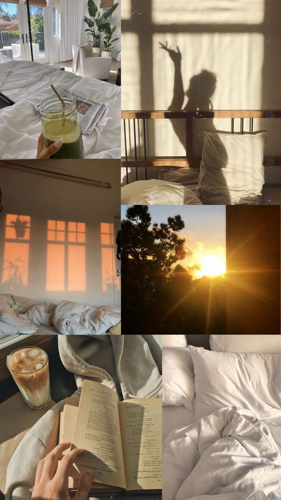

Mis gustos
Soy una persona a la cual le gusta mucho pasar tiempo con la familia.Siento que estoy en un ambiente seguro y de mucho amor mutuo.Adoro a mis sobrinos y siempre que puedo paso tiempo con ellos. También mee gusta leer y meditar, estar siempre enn calma y en conexión con mis sentimientos. Disfruto mucho los idiomas, además de ser porfesora de inglés,estoy aprendiendo italiano, y a miras también de aprender alemán y francés. Amo el arte y sus diferentes formas, voy al teatro recurrentemente, también llevo clases de actuación. Me gusta mucho cuidarme, tanto físicamente como mentalmente , así que uno de mis hobbies también es ir al gimnasio, y saber balancear mi alimentación. Siento que es importante construir una vida saludable ahora que soy joven, para no tener problemas en el futuro cuando sea anciana.
